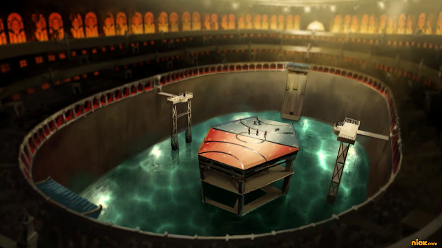
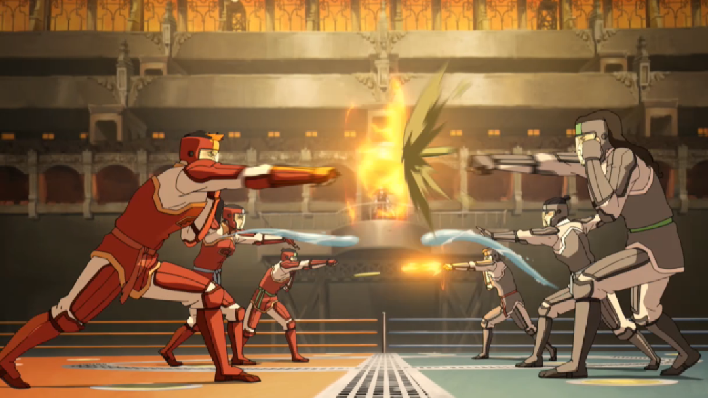

Growing up, you were always fascinated by pro-bending. It was your favorite sport and you would sit with your family around the radio and listen to all the teams compete. When you first heard Avatar Korra joined a pro-bending team, it made the game even more exciting, and you made it your goal to be just as good at pro-bending as her. As you got older, you would practice your bending every day, training with your mother and practicing against dummies. In school, you and your friends would try to pro-bend with each other in secret because it was banned from being played in school. Your parents even found a professional pro-bending player for you to train under so that you would be ready when the time came for you to join a team. When you turned 16, your time finally came to try out for a team, specifically the Eel Hounds. Not only was their mascot the same as your animal companion, but it was also the team best known for the best earth bending pro-benders.
The day you tried out for the team was the most nerve-wracking day of your life. Even though you had trained for so long, you still felt like you were outmatched by all the others trying out for the team. There were so many other benders that you had to compete against for a spot on the team. As a earth bender you knew that you would have to wait and listen for the right moment to attack and focus more on using counterattacks. The time came for your try out in the pro-bending arena. You put your uniform on and mentally prepared yourself for the match. You lined up with your team mates against the opposing team, readying yourself in position. Suddenly, a bell rang loudly througout the arena and the match began. Smoke, water, and dust was every where. You threw combos and earth punches. Heat surrounded you one second and water wizzed past the next second. You fought back against your opponent pushing them back one line while another opponent pushed one of your teammates back a line. So much was happening at once that you completely zoned out for a good 20 minutes. A loud buzz and three dings brought you back to reality, and when you realized what had occured, you were overcome with emotions. You won the match! Not only had you won the match, you were the last person left standing on the platform! Tears of joy streamed down your face as you heard your friends and family who attended the try outs cheering from the stands. This was one of the best days of your life.
One year later, you were standing in the middle of that same arena with cheers roaring in your ears. You were carrying something heavy and metal with your two teammates. It was a championship trophy! The Eel Hounds won the Pro-Bending Championship against the Tigerdillos! All those years of training and dedication to pro-bending had paid off, and you finally felt like you achieved your life long dream of being a pro-bender.